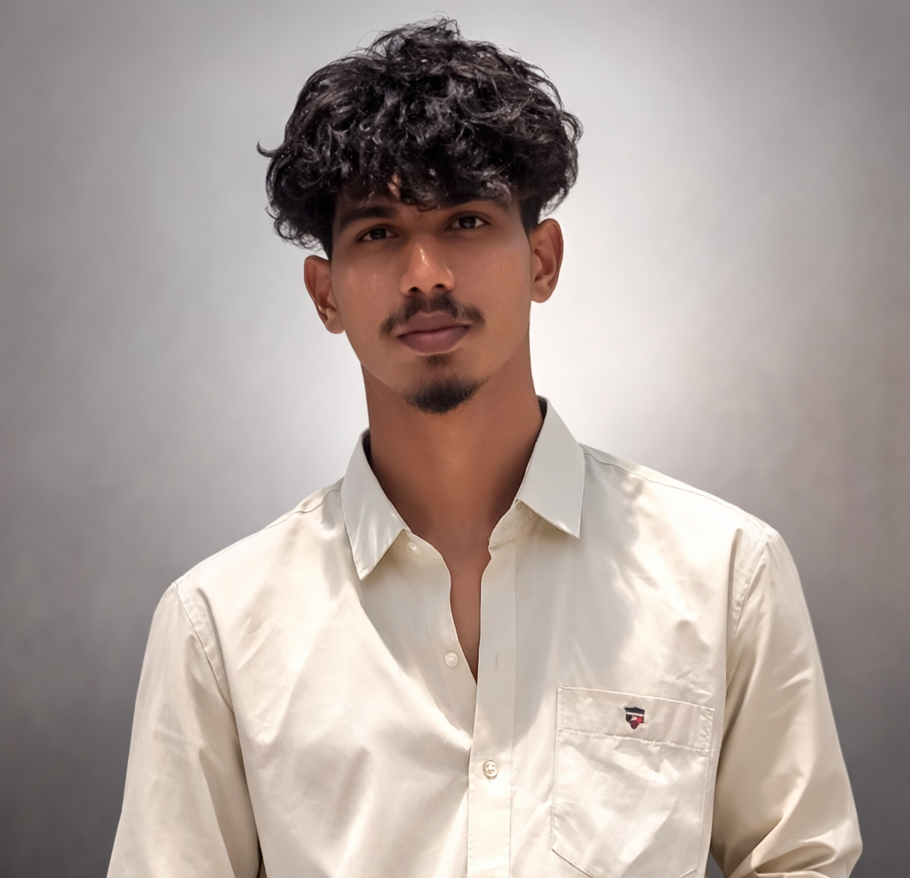

ABOUT ME
I am a B.Tech 3rd year student specializing in Artificial Intelligence and Machine Learning (AIML) at DVR & Dr. HS MIC College of Technology, Andhra Pradesh. My journey into AIML started after completing my diploma in Artificial Intelligence and Machine Learning from St. Mary's Group of Institutions, Guntur, where I built a strong foundation in programming and machine learning basics.
Professional Experience
During my studies, I completed a 6-month internship as a Full Stack Python Developer Intern at Lineyasa & Thevan Software Technologies, Vijayawada. There, I worked on building and maintaining web applications using Python and full stack technologies, contributing to both front-end and back-end development and gaining real-time project experience with a professional team.
Interests & Skills
I enjoy working with Python, web technologies, and AI/ML concepts, and I am always curious to learn how things work behind the scenes. I like turning ideas into practical projects, whether it is a small website, a simple ML model, or an experiment to learn a new tool or framework.
Beyond Coding
Outside academics and coding, I love playing cricket, reading books, and exploring new things that help me grow personally and professionally. These hobbies improve my focus, teamwork, and problem-solving skills, which I try to bring into my projects and collaborations.
What's Next
Right now, I am actively looking for opportunities such as internships, live projects, and collaborations in AI, machine learning, data science, and full stack development. If you're working on interesting ideas or looking for a motivated learner and developer, I'd be happy to connect and contribute!